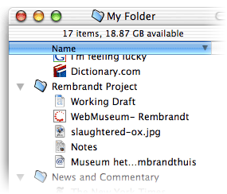
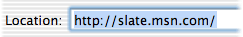
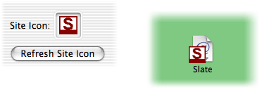
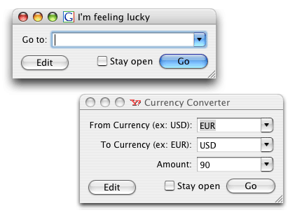
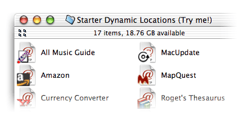

Finder Bookmarks is an editor for Web Location Files, the browser-independent bookmarks that you can store anywhere on your Macintosh.
You will find that organizing your bookmarks in the Finder, with the help of this software, is easier and more powerful than organizing them in any web browser. If you're working on a research project, why not store your notes, pictures, web locations, and working draft all in one place?

Although Web Location Files have been around since Mac OS 8, the Finder's support of them has always been spotty. In Mac OS X, there is no way to edit the URL of a location once it has been created. And although web browsers do a good job of opening and creating these files, they too have forgotten to let you edit them. This application fills the gap.

In addition to meeting the basic need to maintain location addresses, this application will help you distinguish your location files by attaching the web site's icon, if one is available.


Using Dynamic Locations is fast because you bypass the front page of a site. And since Dynamic Location fill-in windows are much smaller than the front page of a Web site, you can leave them open indefinitely.
Though some Web browsers have built-in search functionality, it is often limited to a specific site. Safari, for example, only searches Google. Even when this feature is more flexible, your search bookmarks are limited to one browser and cannot be exported. Only with Finder Bookmarks can you collect a library of Dynamic Locations that will always work with your default browser.
To help get you started, a collection of Dynamic Locations comes with Finder Bookmarks.
